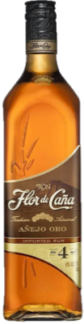

Es una bebida alcohólica destilada que se obtiene de la caña de azúcar o directamente del jugo de la caña ya sea por fermentación o destilación. El ron tiene varios métodos de preparación los que llegan a variar según las tradiciones y lugares donde se produce.
El proceso de elaboración del ron comienza con la fermentación de la melaza (que se extrae de la caña de azúcar), posteriormente se le agrega agua y levadura. Cabe destacar que la levadura que se utilice dará el sabor final y aroma que tendrá. Finalmente se deja reposar en barricas de madera mínimo un año, a esto se le conoce como añejamiento;el tipo de madera también influye en el sabor que el ron obtendrá.
Este licor se perfecciona cuando la caña de azúcar llega al continente Americano donde mejora gracias a que el clima es mucho más apropiado y se descubre que al destilarse, el sabor del ron adquiere tintes y notas que satisfacen los más exigentes paladares.
El ron es por excelencia el licor base para degustarse con cualquier mezclador, ya sea en un cocktail, combinado con cualquier tipo de refresco, con agua mineral, en las rocas y si se trata de un ron de calidad superior por supuesto que se disfruta derecho.
¿Sabías qué?
El ron es la primera bebida destilada que salió al mercado, por lo tanto el ron es más viejo que cualquier otro tipo de bebida destilada.